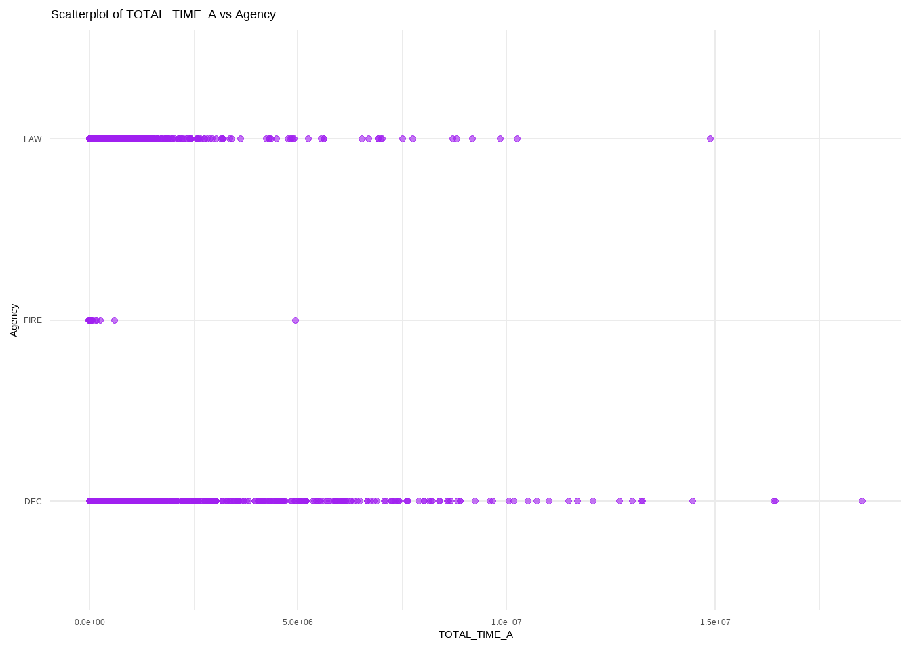

tibble [178,780 × 50] (S3: tbl_df/tbl/data.frame)
$ ID : num [1:178780] 2659640 2659641 2659642 2659643 2659644 ...
$ Reception : chr [1:178780] "E-911" "E-911" "E-911" "E-911" ...
$ Problem : chr [1:178780] "911 TRANSFER VSP" "BLS EMERGENCY" NA NA ...
$ Priority : num [1:178780] 7 3 NA NA 2 NA 2 1 NA NA ...
$ Agency : chr [1:178780] "LAW" "FIRE" "DEC" "DEC" ...
$ Jurisdiction : chr [1:178780] "Alexandria PD" "200 ALX" "DEC" "DEC" ...
$ Response_Date : POSIXct[1:178780], format: "2024-01-01 00:01:09" "2024-01-01 00:02:05" ...
$ Clock_Start : POSIXct[1:178780], format: "2024-01-01 00:01:09" "2024-01-01 00:02:05" ...
$ Phone_Start : POSIXct[1:178780], format: "2024-01-01 00:01:08" "2024-01-01 00:02:04" ...
$ Fixed_Phone_Start: POSIXct[1:178780], format: "2024-01-01 00:01:08" "2024-01-01 00:02:04" ...
$ First_Keystroke : POSIXct[1:178780], format: "2024-01-01 00:01:09" "2024-01-01 00:02:05" ...
$ DELTA_RD_CST : num [1:178780] 0 0 0 0 0 0 22 0 0 0 ...
$ DELTA_RD_TPU : num [1:178780] -1 -1 0 0 0 0 0 -2 0 0 ...
$ DELTA_RD_FTPU : num [1:178780] -1 -1 0 0 0 0 NA -2 0 0 ...
$ DELTA_RD_FCTK : num [1:178780] 0 0 0 0 4 0 0 9 0 0 ...
$ DELTA_CST_TPU : num [1:178780] -1 -1 0 0 0 0 -22 -2 0 0 ...
$ DELTA_CST_FTPU : num [1:178780] -1 -1 0 0 0 0 NA -2 0 0 ...
$ DELTA_CST_FCTK : num [1:178780] 0 0 0 0 4 0 -22 9 0 0 ...
$ DELTA_TPU_FTPU : num [1:178780] 0 0 0 0 0 0 NA 0 0 0 ...
$ DELTA_TPU_FCTK : num [1:178780] 1 1 0 0 4 0 0 11 0 0 ...
$ DELTA_FTPU_FCTK : num [1:178780] 1 1 0 0 4 0 NA 11 0 0 ...
$ Viewed : POSIXct[1:178780], format: NA "2024-01-01 00:04:33" ...
$ Queued : POSIXct[1:178780], format: "2024-01-01 00:01:44" "2024-01-01 00:03:11" ...
$ Fixed_Queued : POSIXct[1:178780], format: "2024-01-01 00:01:44" "2024-01-01 00:03:11" ...
$ DELTA_QUEUES : num [1:178780] 0 0 0 0 0 0 0 0 0 0 ...
$ Phone_End : POSIXct[1:178780], format: "2024-01-01 00:01:45" "2024-01-01 00:08:57" ...
$ Fixed_Phone_End : POSIXct[1:178780], format: "2024-01-01 00:01:45" "2024-01-01 00:08:57" ...
$ DELTA_CALLTAKING : num [1:178780] 0 0 0 0 0 0 0 0 0 0 ...
$ First_Dispatch : POSIXct[1:178780], format: NA "2024-01-01 00:03:15" ...
$ First_Ack : POSIXct[1:178780], format: NA "2024-01-01 00:05:13" ...
$ First_Enroute : POSIXct[1:178780], format: NA "2024-01-01 00:05:13" ...
$ First_Arrived : POSIXct[1:178780], format: NA "2024-01-01 00:10:32" ...
$ First_Clear : POSIXct[1:178780], format: NA "2024-01-01 01:40:47" ...
$ Call_Closed : POSIXct[1:178780], format: "2024-01-01 00:01:45" "2024-01-01 01:40:48" ...
$ Fixed_Call_Closed: POSIXct[1:178780], format: "2024-01-01 00:01:45" "2024-01-01 01:40:48" ...
$ STEP_1 : num [1:178780] -1 -1 0 0 0 0 -22 -2 0 0 ...
$ STEP_2 : num [1:178780] 1 1 0 0 4 0 0 11 0 0 ...
$ STEP_2A : num [1:178780] NA 148 NA NA 19 NA 22 57 NA NA ...
$ STEP_2B : num [1:178780] NA -82 NA NA -2 NA -22 -9 NA NA ...
$ STEP_3 : num [1:178780] 35 66 37 25 17 197 0 48 19 101 ...
$ CALL_TIME : num [1:178780] 37 413 37 25 175 197 0 350 19 102 ...
$ STEP_4 : num [1:178780] NA 4 NA NA 21 NA 3 24 NA NA ...
$ STEP_5 : num [1:178780] NA 118 NA NA 2 NA 94 18 NA NA ...
$ STEP_6 : num [1:178780] NA 0 NA NA 0 NA 0 0 NA NA ...
$ STEP_7 : num [1:178780] NA 319 NA NA 193 NA 272 224 NA NA ...
$ STEP_8 : num [1:178780] NA 5415 NA NA 3210 ...
$ STEP_9 : num [1:178780] NA 0 NA NA 20928 ...
$ STEP_10 : num [1:178780] NA 5415 NA NA 24138 ...
$ TOTAL_TIME_A : num [1:178780] 36 5922 37 26 24375 ...
$ TOTAL_TIME_B : num [1:178780] 36 5922 37 26 24375 ...CAD Time Stamp Analysis
1 CAD Time Stamp Analysis
The following analysis is desinged to look at the time stamps related to service calls for the past 13 months and determine the significance of event sequencing and investigate the challenges presented when calls for service are manipulated after the first call closure.
1.2 Data Cleaning and Preparation
To ensure the data will be useful to us, the first step is cleaning. In this instance, after extracting the data from the archive database, cleaning was done in the Excel file, including removing the “NULL” values and replacing them with empty cells. This forces R to insert its own NULL value and allows it to correctly assign the data types to the columns. Here is a view of that so you can see what we have.
This leaves us well positioned because we now have the character (chr) columns, numeric (num) columns, and time stamps (POSIXct) defined. The numeric columns will be expressed as BIGINT in the background which is what we want for now.
1.2.1 Column Definitions
The columns for this dataset are defined as follows:
Important
Note that any negative values in the deltas occur when the time for the rightmost variable is earlier than the time recorded for the leftmost variable.
- ID: This is the ID column from the CAD. We will use it to isolate specific calls for further analyses.
- Reception: This is how the call entered DECC. ‘Null’ Values will be changed to ‘Not Recorded’ for analytical purposes.
- Problem: This is the final problem nature as updated by the parties working the call
- Priority: This is the relative importance level assigned by DECC. This will be used for further analyses
- Agency: This indicates if the call was for LAW, FIRE, or DEC.
- Jurisdiction: This indicates for whom the call was run.
- Response_Date: This, per CS, is the timestamp indicating when the ID was created and is frequently used, by them, as the start of the call.
- Clock_Start: This should be, per CS, the actual starting point for the call.
- Phone_Start: This timestamp identifies when the CAD acknowledged the start of the phone call for the event.
- Fixed_Phone_Start: This timestamp also identifies when the CAD acknowledged the start of the phone call for the event, but is deemed immutable by the software.
- First_Keystroke: This timestamp identifies when the CAD software registers the first keystroke related to the event
- DELTA_RD_CST: This is the difference, hence Δ, between the Response_Date and ClockStartTime columns.
- DELTA_RD_TPU: This is the difference between the Response_Date and the Time_PhonePickUp columns.
- DELTA_RD_FTPU: This is the difference between the Response_Date and the Fixed_Time_PhonePickUp columns.
- DELTA_RD_FCTK: This is the difference between the Response_Date and the Time_FirstCallTakingKeystroke columns.
- DELTA_CST_TPU: This is the difference between the ClockStartTime and the Time_PhonePickUp columns.
- DELTA_CST_FTPU: This is the difference between the ClockStartTime and the Fixed_Time_PhonePickUp columns.
- DELTA CST_FCTK: This is the difference between the ClockStartTime and the Time_FirstCallTakingKeystroke columns.
- DELTA_TPU_FTPU: This is the difference between the Time_PhonePickUp and Fixed_Time_PhonePickUp columns.
- DELTA_TPU_FCTK: This is the difference between the Time_PhonePickUp and Time_FirstCallTakingKeystroke columns.
- DELTA_FTPU_FCTK: This is the difference between the Fixed_Time_PhonePickUp and Time_FirstCallTakingKeystroke columns.
- Viewed: This is defined by the vendor as the time the call was first viewed in the Call Taking Form.
- Queued: This is the time when the call has been released to be dispatched by the calltaker.
- Fixed_Queued: This is the fixed time when the call has been released to be dispatched by the calltaker.
- DELTA_QUEUES: This is the difference between the Time_CallEnteredQueue and Fixed_Time_CallEnteredQueue columns.
- Phone_End: This is the time when the caller is released.
- Fixed_Phone_End: This is the fixed time when the caller is released.
- DELTA_CALLTAKING: This is the difference between the Time_CallTakingComplete and Fixed_Time_CallTakingComplete columns.
- First_Dispatched: This is the time when the dispatcher assigned the first unit to the call.
- First_Ack: This is the time when the first unit acknowledges receiving the dispatched call.
- First_Enroute: This is the time the first dispatched unit marks or is marked ‘En Route’ for the assigned call.
- First_Arrived: This is the time the first dispatched unit marks or is marked ‘Arrived’ for the assigned call.
- First_Clear: This is the time that the first unit clears or leaves the call after arrival.
- Call_Closed: This is the time that the final unit is cleared from the call, closing the event out.
- Fixed_Call_Closed: This is the fixed time that the final unit is cleared from the call, closing the event out.
- STEP_1: This is the time difference between the ClockStartTime and the Time_PhonePickUp columns.
- STEP_2: This is the time difference between the Time_PhonePickUp and the Time_FirstCallTakingKeystroke columns.
- STEP_2A: This is the time difference between the Time_PhonePickUp and TimeCallViewed columns.
- STEP_2B: This is the time difference between the TimeCallViewed and Time_FirstCallTakingKeystroke columns.
- STEP_3: This is the time difference between the Time_FirstCallTakingKeystroke and Time_CallEnteredQueue columns.
- CALL_TIME: This is the time difference between the Time_PhonePickUp and Time_CallTakingComplete columns.
- STEP_4: This is the time difference between the Time_CallEnteredQueue and Time_First_Unit_Assigned columns.
- STEP_5: This is the time difference between the Time_First_Unit_Assigned and TimeFirstUnitDispatchAcknowledged columns.
- STEP_6: This is the time difference between the TimeFirstUnitDispatchAcknowledged and Time_First_Unit_Enroute columns.
- STEP_7: This is the time difference between the Time_First_Unit_Enroute and Time_First_Unit_Arrived columns.
- STEP_8: This is the time difference between the Time_First_Unit_Arrived and TimeFirstCallCleared columns.
- STEP_9: This is the time difference between the TimeFirstCallCleared and Time_CallClosed columns.
- STEP_10: This is the time difference between the Time_First_Unit_Arrived and Time_CallClosed columns.
- TOTAL_TIME_A: This is the time difference between the Response_Date and Time_CallClosed columns.
- TOTAL_TIME_B: This is the time difference between the ClockStartTime and Time_CallClosed columns.
Note
Please note that there should not be, if calls are not re-opened, any delta between a time stamp and its ‘Fixed’ counterpart.
In the list above, the Steps columns are meant to follow a call from the time the clock starts to the time the clock stops. I’ve identified a possible 10 step timing chain that would allow us to step through the history of a call. There are multiple possible steps for the second step depending on management preferences. Once we have established the chain time wise, then we can use these steps as a tool to investigate specific events and to get better analyses and insights from processes overall. This can also assist in trend analyses. Where there are no entries for some of these time points, we may need to create alternative elapsed time points to create our steps. Those decisions are part of this project’s goals.
You will note there are some columns duplicated because they are meant to be used for different analyses using the same dataset. Traditionally, we shouldn’t have to do this, but I chose to make this distinction for ease of use.
1.3 Data Analysis
1.3.1 Missing Data
Looking at the dataset, here is a graph of missing data:

The graph shows that we have over 70,000 calls where we never recorded an arrival to the event. We might need to add a disposition for the calls to see if there is a correlation between missing values and disposition codes. I’ve included a printout of the number of missing rows by column to assist in the numbers.
ID Reception Problem Priority
0 28779 23858 23861
Agency Jurisdiction Response_Date Clock_Start
0 77 0 8241
Phone_Start Fixed_Phone_Start First_Keystroke DELTA_RD_CST
6450 6516 6450 8241
DELTA_RD_TPU DELTA_RD_FTPU DELTA_RD_FCTK DELTA_CST_TPU
6450 6516 6450 10168
DELTA_CST_FTPU DELTA_CST_FCTK DELTA_TPU_FTPU DELTA_TPU_FCTK
10234 10168 6516 6450
DELTA_FTPU_FCTK Viewed Queued Fixed_Queued
6516 73125 0 0
DELTA_QUEUES Phone_End Fixed_Phone_End DELTA_CALLTAKING
0 6450 6450 6450
First_Dispatch First_Ack First_Enroute First_Arrived
62044 70820 64274 73291
First_Clear Call_Closed Fixed_Call_Closed STEP_1
67202 95 82 10168
STEP_2 STEP_2A STEP_2B STEP_3
6450 75013 73125 6450
CALL_TIME STEP_4 STEP_5 STEP_6
6450 62044 70821 70823
STEP_7 STEP_8 STEP_9 STEP_10
73291 76129 67204 73292
TOTAL_TIME_A TOTAL_TIME_B
95 8334 With this information, we will need to address some of the NULL values in order to determine if there are any correlations. Immediately, you can see that the steps where the arrival time is missing also have missing values.
We can repeat the graph to ensure that there are no longer any missing values for these four columns.

Now that we have those addressed, let’s look at how many negative values we have across the thirteen month period. For this, I’m going to create a variable for each of the numeric columns, except Priority, and calculate a percentage of the data we do have that is negative and missing. That table can be found below:
| Column | Negative Rows | NA Rows | Neg Percentage | NA Percentage |
|---|---|---|---|---|
| DELTA_RD_CST | 4 | 8241 | 0 | 4.61 |
| DELTA_RD_TPU | 86934 | 6450 | 50.45 | 3.61 |
| DELTA_RD_FTPU | 86934 | 6516 | 50.47 | 3.64 |
| DELTA_RD_FCTK | 6959 | 6450 | 4.04 | 3.61 |
| DELTA_CST_TPU | 99001 | 10168 | 58.72 | 5.69 |
| DELTA_CST_FTPU | 98935 | 10234 | 58.7 | 5.72 |
| DELTA_CST_FCTK | 19026 | 10168 | 11.28 | 5.69 |
| DELTA_TPU_FTPU | 0 | 6516 | 0 | 3.64 |
| DELTA_TPU_FCTK | 0 | 6450 | 0 | 3.61 |
| DELTA_FTPU_FCTK | 0 | 6516 | 0 | 3.64 |
| DELTA_QUEUES | 0 | 0 | 0 | 0 |
| DELTA_CALLTAKING | 0 | 6450 | 0 | 3.61 |
| STEP_1 | 99001 | 10168 | 58.72 | 5.69 |
| STEP_2 | 0 | 6450 | 0 | 3.61 |
| STEP_2A | 2 | 75013 | 0 | 41.96 |
| STEP_2B | 105565 | 73125 | 99.91 | 40.9 |
| STEP_3 | 582 | 6450 | 0.34 | 3.61 |
| CALL_TIME | 586 | 6450 | 0.34 | 3.61 |
| STEP_4 | 2369 | 62044 | 2.03 | 34.7 |
| STEP_5 | 67 | 70821 | 0.06 | 39.61 |
| STEP_6 | 5578 | 70823 | 5.17 | 39.61 |
| STEP_7 | 2 | 73291 | 0 | 41 |
| STEP_8 | 9591 | 76129 | 9.34 | 42.58 |
| STEP_9 | 11 | 67204 | 0.01 | 37.59 |
| STEP_10 | 6 | 73292 | 0.01 | 41 |
| TOTAL_TIME_A | 3 | 95 | 0 | 0.05 |
| TOTAL_TIME_B | 113 | 8334 | 0.07 | 4.66 |
Because of the way the programming language processes our requests, I’m going to reverse the fields in a few of the areas where I have no negative time-to-event values to ensure that both directions are equal in value counts.
| Column | Negative Rows | NA Rows | Neg Percentage | NA Percentage |
|---|---|---|---|---|
| DELTA_TPU_FTPU2 | 0 | 6516 | 0 | 3.64 |
| DELTA_TPU_FCTK2 | 93554 | 6450 | 54.29 | 3.61 |
| DELTA_FTPU_FCTK2 | 93554 | 6516 | 54.31 | 3.64 |
| DELTA_QUEUES2 | 0 | 0 | 0 | 0 |
| DELTA_CALLTAKING2 | 0 | 6450 | 0 | 3.61 |
1.3.2 Initial Observations
Initially, it should be noted that there are a lot of negative time-to-event values between the Response_Date and both of the timestamps for when the phone is picked up. This could imply that the Response_Date column is also being impacted, at times, when the call is reopened. If this is the case, then I would recommend using that column for fencing entries and, even then, with caution. You can also see a lot of negative values between the ClockStartTime and the phone pickups. Again, this implies, to me, that this column may not be the most accurate. From appearances, I would recommend future analyses start with the Fixed_Time_PhonePickup as the initial point and disregard the call start time.
I am pleased to see that there are no negative time-to-event values between the Time_PhonePickUp and Fixed_Time_PhonePickUp columns. That implies that there are no issues with reopening calls there. I would recommend using the Fixed value whenever possible. Those are implied to be immutable per CentralSquare. I am also pleased to see that see there are no negative time-to-event values for the span between the phone pickup and the first calltaking keystroke. The only drawback I saw is in the number of rows missing for both the Time_PhonePickUp and Fixed_Time_PhonePickUp columns. There are 6450 and 6516 missing rows respectively. These represent 3.61 percent and 3.64 percent of the columns missing respectively. The good news is that, at under 5% of the dataset, initial EDA and other preliminary work can safely discard those columns.
We should abandon the TimeCallViewed column. There are too many missing values. Attempting to use this column in time-to-event analyses resulted in over 40% of those events having missing data. While abandoned calls may be considered censored in survival analyses, applying censoring rules to these columns renders that column inert analytically. Therefore abandoning the column is the only analytical course of action.
Another positive observation was a lack of negative values between the time stamps for calls entering the dispatch queue. Additionally, there were no missing values between the two columns either. So we appear to be able to use either column, again I recommend defaulting to the Fixed alternative for analytical purposes.
The reversals show that where there were no negative time-to-event values between the phone pickup timestamps, the first entering queue timestamps, the completion of the call taking process timestamps. This is heartening and allows us to select either of the two timestamps for the same event. The interesting thing to note is that there is a delta in about 50% of cases between the phone pickup and the first call taking keystroke. This confirms the idea that we can build a call flow process for survival analyses that starts with the phone pickup and continues with the first keystroke. It also shows that nearly half of the time, the timestamps for phone pickup and first keystroke are identical.
1.3.3 EDA
Now that we know what we’re facing with respect to negative values and missing values, the first stage of analysis can take place. This first summary will leave the negative values in place, but will remove the missing values from the calculation.
| Minimum | Mean | Median | Q1.25% | Q3.75% | Maximum | Std_Dev | Skewness | Kurtosis | |
|---|---|---|---|---|---|---|---|---|---|
| DELTA_RD_CST | -571677 | 351.89 | 0 | 0 | 0 | 10663719 | 35765.40 | 200.32 | 51040.83 |
| DELTA_RD_TPU | -16 | -0.80 | -1 | -2 | 0 | 2 | 0.90 | -0.65 | 0.25 |
| DELTA_RD_FTPU | -16 | -0.80 | -1 | -2 | 0 | 2 | 0.90 | -0.65 | 0.25 |
| DELTA_RD_FCTK | -10 | 3.40 | 0 | 0 | 1 | 5051 | 27.60 | 76.82 | 10171.81 |
| DELTA_CST_TPU | -10663719 | -283.97 | -1 | -2 | 0 | 571677 | 33772.02 | -225.36 | 62965.71 |
| DELTA_CST_FTPU | -10663719 | -284.07 | -1 | -2 | 0 | 571677 | 33778.63 | -225.32 | 62941.06 |
| DELTA_CST_FCTK | -10663719 | -279.68 | 0 | 0 | 1 | 571677 | 33772.07 | -225.36 | 62965.47 |
| DELTA_TPU_FTPU | 0 | 0.00 | 0 | 0 | 0 | 0 | 0.00 | NaN | NaN |
| DELTA_TPU_FCTK | 0 | 4.21 | 1 | 0 | 3 | 5053 | 27.65 | 76.42 | 10101.34 |
| DELTA_FTPU_FCTK | 0 | 4.21 | 1 | 0 | 3 | 5053 | 27.65 | 76.40 | 10097.63 |
| DELTA_QUEUES | 0 | 0.00 | 0 | 0 | 0 | 0 | 0.00 | NaN | NaN |
| DELTA_CALLTAKING | 0 | 0.00 | 0 | 0 | 0 | 0 | 0.00 | NaN | NaN |
| STEP_1 | -10663719 | -283.97 | -1 | -2 | 0 | 571677 | 33772.02 | -225.36 | 62965.71 |
| STEP_2 | 0 | 4.21 | 1 | 0 | 3 | 5053 | 27.65 | 76.42 | 10101.34 |
| CALL_TIME | -2 | 198.97 | 90 | 25 | 207 | 90227 | 548.13 | 35.87 | 4423.98 |
| STEP_3 | -2 | 4293.26 | 42 | 15 | 93 | 15730112 | 113571.13 | 66.89 | 6270.95 |
| STEP_4 | -14854005 | -4836.92 | 9 | 0 | 265 | 71938 | 123966.19 | -54.16 | 4107.15 |
| STEP_5 | -1695 | 1035.30 | 6 | 0 | 48 | 3627979 | 33709.73 | 61.41 | 4687.81 |
| STEP_6 | -3627979 | -75.50 | 0 | 0 | 0 | 10715 | 11196.51 | -316.02 | 102138.21 |
| STEP_7 | -3355 | 785.79 | 211 | 0 | 411 | 14853997 | 49026.79 | 270.03 | 80255.55 |
| STEP_8 | -14847718 | 2396.61 | 795 | 303 | 2292 | 8711058 | 60703.95 | -115.97 | 39169.52 |
| STEP_9 | -284 | 6930.77 | 0 | 0 | 1315 | 14883795 | 119785.64 | 56.36 | 4486.34 |
| STEP_10 | -2152 | 9048.81 | 1680 | 580 | 4887 | 10249784 | 110800.21 | 52.69 | 3548.09 |
| TOTAL_TIME_A | -2300 | 16750.64 | 1254 | 195 | 4510 | 18518472 | 239705.75 | 33.53 | 1470.26 |
| TOTAL_TIME_B | -10663451 | 17046.01 | 1280 | 170 | 4543 | 18518472 | 248013.95 | 31.13 | 1366.78 |
1.3.3.1 EDA Observations
The first thing that should stand out is that there are several mean values that have a negative value. In a time-to-event analysis, this disqualifies this dataset. If you notice, the minimum for some values represents the largest difference between the columns. For example, the maximum negative value between the clock start time and the time the phone was picked up is a little over 123 days. This implies that we answered the phone for that call about 4 months before the clock even started on the event. On the other hand, the maximum positive value for that same field implies that we answered a call about 6.6 days after the clock started. Both of these instances are caused by the call being reopened after close. In these cases, the mean value is also negative showing that we, on average, answered the phone about 4 minutes and 45 seconds before the clock started. In fact, even the median value shows that we answered the call a second before the clock started. As discussed above, this suggests that we do not use the ClockStartTime column in the database for future work. Unlike the Response_Date column which can be used as a fencing field. These values are also spread out over 13 months and nearly 170,000 rows of data since the calculations ignored the missing data fields. We can create new datasets that allow for the removal of the negative values and allow for only positive analysis. We can also address outlier values by determing how to identify them in the dataset and those analyses will proceed below.
1.3.4 First Visuals
[[1]]
[[2]]
[[3]]
[[4]][[1]]
[[2]]
[[3]]
[[4]]These graphs show the limitations of visualizing these columns. As you can see, the graphs are not very informative. The best information that I can view immediately is the final scatterplot of the time-to-event marked as STEP_1 above and the Agency to whom the call was dispatched. This shows that the greatest spread of data comes for APD calls. This tends to make the most sense since we use auto-dispatch where possible for AFD calls.
[[1]]
[[2]]
[[3]]
[[4]][[1]]
[[2]]
[[3]]
[[4]][[1]]
[[2]]
[[3]]
[[4]]
[[1]]
[[2]]
[[3]]
[[4]][[1]]
[[2]]
[[3]]
[[4]][[1]]
[[2]]
[[3]]
[[4]]Looking at the visuals for total time elapsed from either the Response_Date or the ClockStartTime, both of which we may discard in future analyses, we do see some very interesting things. Aside from the fact that the histogram and the boxplot aren’t very useful, I have seen something interesting in the scatter plots. Using the ClockStartTime timestamp as a starting point, we can see some calls for service where there is a negative time-to-event value from start to finish. This does not appear when using the Response_Date column. This implies that since re-opening the call starts a new clock, but it doesn’t overwrite a timestamp until the system needs to, that calls may be re-opened, but not formally closed again resulting in a situation where the call appears to end before it begins. Previously, I would have expected this to only happen in something like The Minority Report by Phillip K. Dick. It appears that almost all of them can be found where the call source was either not recorded or was generated by the officer.
Next, I think we need to look at outliers, how many of them exist and which columns have the most outlier values. In many cases, we can go back and pull records for the most egregious values to determine what happened. This can also allow us to an acceptable method to remediate those values, if we choose, and then use the remediated values to determine what reported numbers would have been if the outliers were moved back to normalized values.
We can test this with any of the numeric variables. Experiment 1 is
# A tibble: 6 × 52
ID Reception Problem Priority Agency Jurisdiction Response_Date
<dbl> <chr> <chr> <dbl> <chr> <chr> <dttm>
1 2659717 E-911 DOMESTIC V… 1 LAW Alexandria … 2024-01-01 02:11:07
2 2659739 E-911 ASSAULT NO… 2 LAW Alexandria … 2024-01-01 02:49:59
3 2659785 E-911 SEIZURE AL… 1 FIRE 200 ALX 2024-01-01 05:10:23
4 2659799 E-911 ASSAULT NO… 3 LAW Alexandria … 2024-01-01 06:39:14
5 2659800 E-911 DISORDERLY… 2 LAW Alexandria … 2024-01-01 06:52:47
6 2659812 E-911 911 HANG UP 2 LAW Alexandria … 2024-01-01 07:42:49
# ℹ 45 more variables: Clock_Start <dttm>, Phone_Start <dttm>,
# Fixed_Phone_Start <dttm>, First_Keystroke <dttm>, DELTA_RD_CST <dbl>,
# DELTA_RD_TPU <dbl>, DELTA_RD_FTPU <dbl>, DELTA_RD_FCTK <dbl>,
# DELTA_CST_TPU <dbl>, DELTA_CST_FTPU <dbl>, DELTA_CST_FCTK <dbl>,
# DELTA_TPU_FTPU <dbl>, DELTA_TPU_FCTK <dbl>, DELTA_FTPU_FCTK <dbl>,
# Viewed <dttm>, Queued <dttm>, Fixed_Queued <dttm>, DELTA_QUEUES <dbl>,
# Phone_End <dttm>, Fixed_Phone_End <dttm>, DELTA_CALLTAKING <dbl>, …